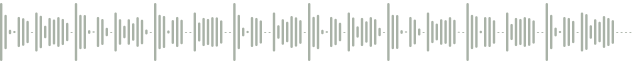
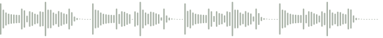

Max for Live
Put the MIDI device before Serum or your instrument. Enable Live MIDI and press play.
MIDI trackMIDI → AUDIO
Submotif.amxd
Your instrument

Generate a phrase in your key, then play it through your own bass synth.
Free · AGPLv3 · VST3 + Max for Live

Listen with drums. Take the MIDI into your own track.

Submotif sends the MIDI. Your synth supplies the sound.
Put the MIDI device before Serum or your instrument. Enable Live MIDI and press play.

On the instrument track, choose Submotif under MIDI From. Set Monitor to In.
Free under AGPLv3. Study the code, change it and share it under the license’s terms.
No coding experience needed. Community PRs need Habeeb’s approval.